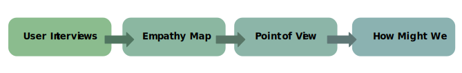
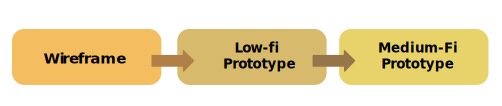

Trip Teddy
A mobile app for travel itinerary planning and social trip sharing.
Design Context
This from-scratch side project began with user research to uncover key pain points in trip planning. Our goal was to design a solution that simplifies the planning process and makes it easier for travel companions to collaborate and enjoy the experience together.
Ｗhat We Did
- Conducted 3 rounds of user interviews and testing to define key needs in trip planning.
- Designed the "Travel Playlist" feature to let users quickly apply itineraries by theme, location, or season—boosting planning efficiency by around 30%.
- Built a cross-platform prototype with a clean, consistent visual style.
Research
Our research followed a four-stage process — starting with user interviews, followed by empathy maps, POV statements, and finally HMW questions to guide ideation.
User Interviews – Understand Behaviors and Pain Points
We conducted in-depth interviews to explore how users plan their trips, the tools they rely on, and the challenges they encounter. Two rounds of interviews were conducted—initially with a diverse range of travelers, and later focusing on experienced solo planners. These conversations helped us gather rich insights into real-world planning behaviors and unmet needs.
Interview Focus:
The interview questions focused on the user's role, planning methods, main pain points, and desired solutions.
Questions
- What role do you usually play when planning a trip
- How do you usually plan your itinerary？
- What is the biggest challenge you face when planning a trip?
- What common problems do you encounter during your travels?
First stage
Second Stage
Empathy Map – Synthesize What Users Say, Do, Think, and Feel
We translated our interview findings into empathy maps to visualize users' thoughts, emotions, and actions. This helped the team build shared understanding and identify key emotional drivers behind user frustrations, such as stress from information overload and lack of collaborative tools during planning.
Summary of Result:
Users face several challenges during trip planning:
-
Scattered information across platforms
Users often search for travel information on platforms like Google, YouTube, and Instagram, then use tools like Google Docs, Google Maps, and Splitwise to organize their plans. Switching between these platforms makes the planning process time-consuming and difficult to manage. -
Poor collaboration and difficulty reaching group consensus
During planning, users must prepare multiple alternatives for group discussion. However, it's still hard to meet everyone’s needs, often leading to compromises and frustration. -
Trouble recording and splitting expenses
One person is usually in charge of expense tracking, but manual input and calculations can lead to mistakes, forgotten expenses, or misunderstandings. -
Lack of a clear, visual itinerary overview
Travel plans are often documented in text format, which makes it hard to grasp multi-day itineraries at a glance—especially when external links (e.g., Google Docs) are used. -
Inflexibility when plans change during the trip
Users worry about unexpected changes—such as bad weather or participant dropouts—which can negatively affect the overall travel experience due to a lack of responsive planning tools.
POV & HMW – From Defining Problems to Exploring Solutions
We used insights from the empathy maps to write POV statements that highlight key user problems, like scattered information and hard-to-manage group planning. Then, we turned each POV into "How Might We" questions to help us explore possible solutions and spark new ideas.
Problem Definition & Opportunities :
POV #1：Scattered attraction information makes searching and selection difficult
We met Zoan, who struggled when trying to search for and choose travel attractions.
We found that travel information is scattered across different platforms, making planning time-consuming and inconvenient. If all the details were in one place, users could plan more efficiently
HMW
- HMW make the characteristics of each attraction clearer and easier to read?
- HMW offer ready-made itinerary templates to help users make quicker decisions?
- HMW make the attraction selection process more fun and intuitive?
Solutions
- ✅ Categorize attractions clearly (e.g., family-friendly, food, nature).
- ✅ Offer itinerary templates that users can use or customize.
- ✅ Add fun features like random picks or travel challenges to make choosing more engaging.
POV #2: Hard to meet everyone’s needs in group trips
We met Dennis, who struggled to plan a trip that satisfied everyone.
We found that travel plans are often made by a few people, leading others to compromise, which affects satisfaction. If planning involved voting or collaborative tools, everyone’s needs could be considered, making trips fairer and more enjoyable.
HMW
- HMW create a plan that satisfies the whole group?
- HMW offer alternatives that most people accept without feeling unfair to others?
- HMW keep planning simple while considering everyone’s needs?
Solutions
- ✅ Voting system to include everyone in decision-making.
- ✅ Suggested alternatives that balance most needs fairly.
- ✅ Preference tagging to let users mark favorite spots for better matching.
Summary of Results:
🔹 Main Pain Points in Trip Planning:
- Scattered attraction info makes users switch between platforms, making planning harder.
- Hard to meet everyone’s needs, often causing conflicts or compromises.
- Expense tracking and splitting is often unclear or incomplete.
🔹 Core Solution Ideas:
- Tagged attractions + itinerary templates → simplify choices and make decisions easier.
- Voting + collaborative planning → involve everyone and improve satisfaction.
- Auto expense tracking and splitting → clearer and easier cost management.
🔹 Extra Design Considerations:
- Visual trip overview for quick understanding of plans.
- Social integration like Instagram or Google Maps sync for real-time suggestions.
- Flexible itinerary editing to handle unexpected changes smoothly.
| User Needs | Design Opportunities |
|---|---|
| Avoid switching between multiple platforms when planning | All-in-one trip planner with attractions, stays, budgeting, and scheduling. |
| Help users reach group decisions faster | Voting and collaboration tools for smoother group planning. |
| Provide a clear and readable itinerary overview | Visual summaries and interactive maps for quick daily trip views. |
| Automate travel expense management | Built-in tools to track and split costs automatically. |
| Adapt to unexpected changes during the trip | Real-time updates and backup suggestions for issues like delays or weather. |
Design
Our design process extended naturally from the research phase, transforming insights into tangible solutions through a multi-step approach
Wireframe
Based on the identified user needs and opportunity areas from the research, we created initial design drafts that emphasized trip planning and collaboration. Key features such as a visual timeline and popular itinerary suggestions were integrated to simplify planning and enhance usability. We prioritized intuitive menu layouts, ensured complete functionality flows, and incorporated supportive imagery to aid comprehension.
Low-fi Prototype Structure:
We built a low-fidelity prototype to test key features and improve interaction flow, ensuring the planning experience was smooth and intuitive.
- Overview: Daily cards + map pins for quick reference.
- Explore: Tags, filters, random picks, travel challenges.
- Planning: Drag & drop, voting, and comments for collaboration.
- Expenses: Scan receipts, auto-logging, and confirmation steps.
- Adaptability: Real-time alerts and backup suggestions.
Medium-Fi Prototype
We refined the entire experience into a medium-fidelity prototype. This included full interaction mapping, visual consistency, and usability improvements:
- Unified visual style and component coherence
- Seamless navigation between interfaces
- Clear iconography and naming
- Improved modal designs and streamlined information structure
- Enhanced visual cues to support decision-making in itinerary planning
Testing & Hi-Fi Prototype
To enhance usability and finalize the design, we conducted user testing and applied iterative refinements to develop a high-fidelity prototype. These steps helped ensure the final experience was intuitive, accessible, and visually polished.
User Testing & Iterations:
- Conducted usability testing with the “Think Aloud” method to observe user behavior in real time.
- Identified confusion with unclear terms (e.g., “Clone”) and streamlined navigation flows based on feedback.
- Adjusted terminology, simplified steps, and redesigned icons/buttons for better clarity and inclusiveness.
Hi-Fi Prototype:
- Integrated visual refinements and built a consistent design system.
- Enhanced layout hierarchy and interface clarity to support decision-making.
- Improved interaction feedback and transitions to create a more seamless and engaging experience.
Reflection
This project focused on solving common problems in travel planning through a simple and efficient itinerary app. By addressing user needs such as collaboration, flexibility, and clarity, we aimed to streamline the planning process. Through testing and iteration, we learned that prioritizing core features—rather than trying to include everything—leads to a smoother, more usable experience.
What’s Next?
Further Testing and Optimization
- Conduct larger-scale user testing to validate improvements in the Hi-Fi Prototype.
- Adjust feature details based on habits of different user groups (e.g., solo travelers, family trips, business travel).
Enhancing Interaction Experience
- Improve subtle animations, such as swiping, transitions, and micro-interactions, to enhance smoothness.
- Add loading feedback and progress indicators to reduce user anxiety during wait times.
- Introduce drag-and-drop or gesture controls to make itinerary editing more intuitive.
Project Takeaways
This project aimed to solve common travel planning problems with a simple and easy-to-use itinerary app. It includes features like tag-based search, templates, shared editing, and real-time updates. One big challenge was choosing which features to keep. At first, we tried to include many functions, but later found that too much made the app harder to use. In the end, we focused on itinerary recommendations to keep things clear and expandable.
- Fewer, focused features improve the user experience. Too many can reduce clarity and usability.
- User testing should check if core features solve real problems, not just what's missing.
- Familiar design patterns help users understand and use the app more easily.